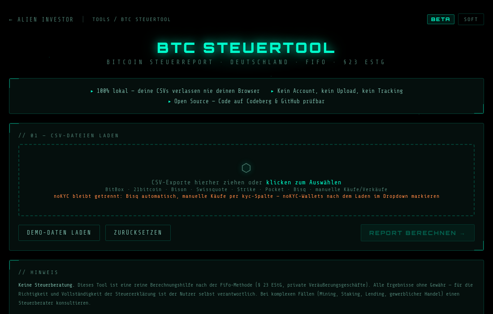
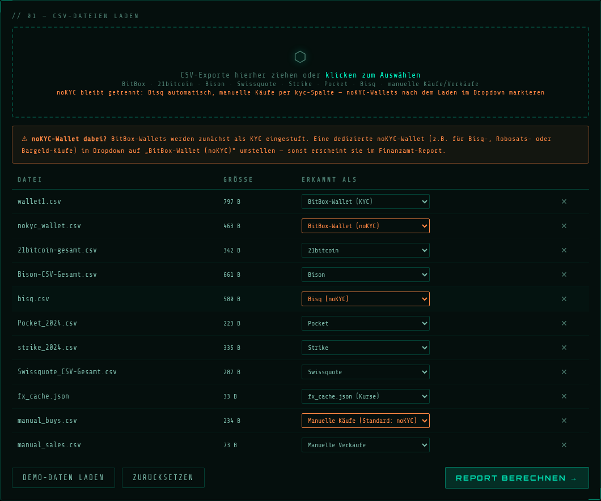
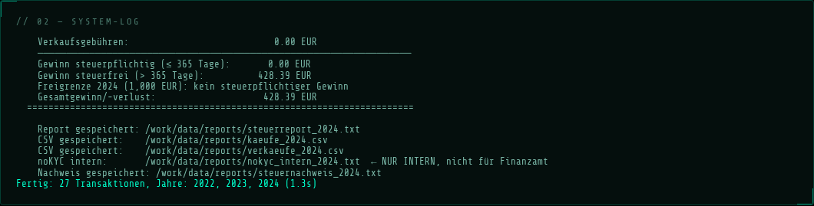
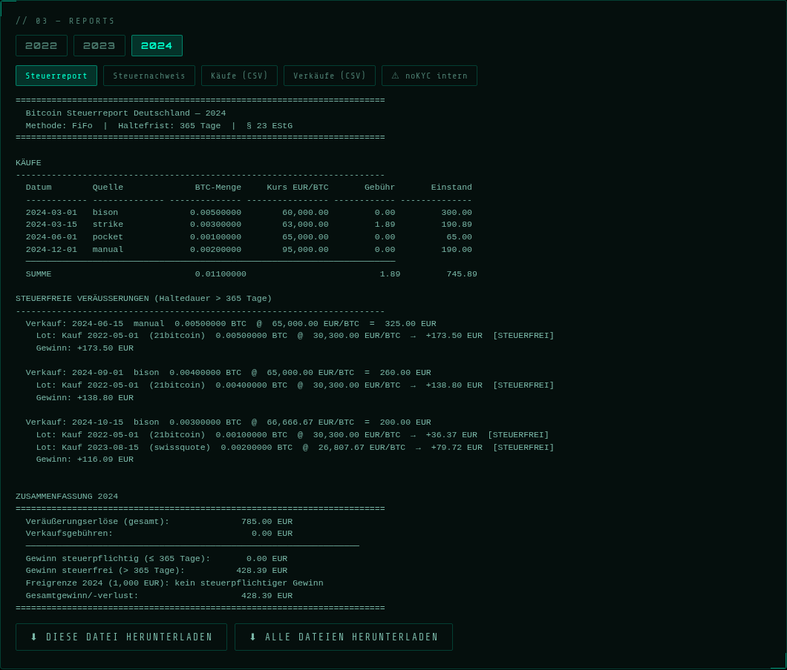
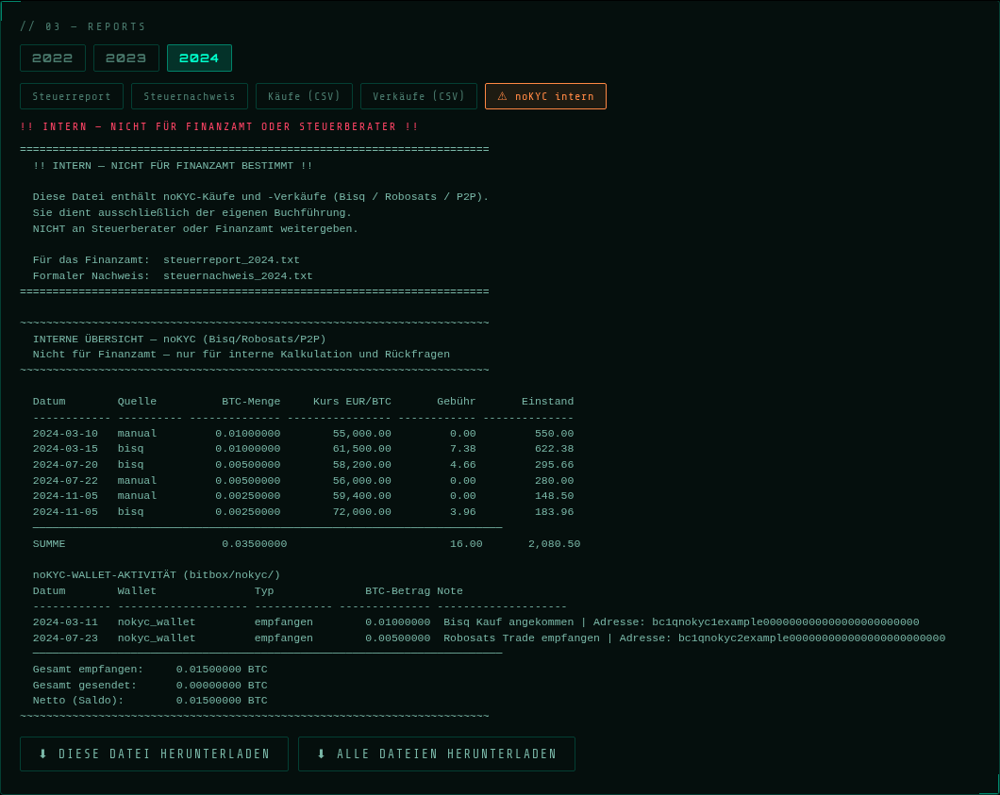
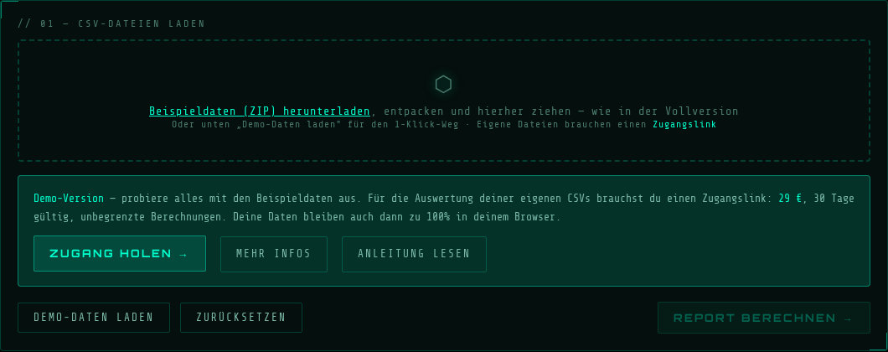

„Deine Transaktionsdaten verlassen nie deinen Rechner. Kein Upload, kein Account, kein Tracking — die komplette Berechnung läuft lokal in deinem Browser."
Du willst direkt loslegen?
→ Demo öffnen (kostenlos, mit Beispieldaten) · → Zugang holen — 29 €
Nur deine CSV-Exporte. Jeder Broker und die BitBox-App bieten einen Export an — einmal pro Jahr herunterladen reicht:
| Quelle | Wo exportieren |
|---|---|
| BitBox | BitBoxApp → Konto-Informationen → Transaktionshistorie exportieren (pro Wallet eine CSV) |
| 21bitcoin | App → Aktivität → Report exportieren |
| Bison | App → Konto → Reports → Transaktionshistorie (CSV kommt per E-Mail) |
| Swissquote | Web → Konto → Transaktionen → CSV-Export |
| Strike | App/Web → Aktivität → Report erstellen |
| Web → Verlauf → CSV herunterladen | |
| Bisq | Portfolio → Verlauf → Exportieren |
Käufe ohne CSV (Robosats, Bargeld, P2P) oder bei Brokern ohne eigenen Parser trägst du in eine
einfache manual_buys.csv ein — Details weiter unten.
Öffne deinen Zugangslink. Ziehe alle CSV-Dateien gleichzeitig in die gestrichelte Zone — oder klicke sie an und wähle die Dateien aus. Die Reihenfolge ist egal, Dateinamen sind egal: Die App erkennt jeden Broker automatisch am Inhalt der Datei.

Die Startansicht: CSV-Dateien einfach in die gestrichelte Zone ziehen.
Nach dem Laden zeigt die Tabelle jede Datei mit dem erkannten Typ. Orange markierte Einträge sind noKYC-Quellen — sie bleiben strikt vom Finanzamt-Report getrennt:

Alle Dateien erkannt — Bisq und manuelle Käufe automatisch als noKYC (orange).
Eine BitBox-CSV verrät nicht, ob die Wallet KYC-Coins oder noKYC-Coins enthält — das weißt nur du. Führst du eine dedizierte noKYC-Wallet (z.B. für Bisq-Eingänge), stelle sie im Dropdown auf „BitBox-Wallet (noKYC)". Sonst erscheint sie im Finanzamt-Report. Die orange Hinweis-Box erinnert dich daran, solange BitBox-Wallets als KYC eingestuft sind.
Wird eine Datei nicht erkannt, ist die Berechnung gesperrt, bis du den Typ manuell wählst oder die Datei auf „Ignorieren" stellst — so entsteht nie ein unvollständiger Report. Fehlt dein Broker komplett? Schick die CSV-Kopfzeile (ohne echte Daten) an kontakt@alien-investor.org — Parser werden laufend ergänzt, und als Kunde hast du neue Broker sofort, ohne irgendetwas zu installieren.
Ein Klick auf „Report berechnen". Beim allerersten Lauf lädt die App ihre Python-Umgebung in den Browser — das dauert einmalig ein paar Sekunden, danach geht es schnell. Das System-Log zeigt jeden Schritt:

Das System-Log: jede Datei, jede Transaktion, volle Transparenz.
Warum das dauert: Die App lädt eine komplette Python-Laufzeitumgebung in deinen Browser, statt deine Daten auf einen Server zu schicken. Das ist der Preis für echte Privatsphäre — und er wird nur beim ersten Lauf fällig.
Pro Steuerjahr bekommst du mehrere Dokumente, umschaltbar über die Tabs:

Jahres-Tabs oben, Dokument-Tabs darunter — hier der Steuerreport 2024.
| Dokument | Inhalt | Fürs Finanzamt? |
|---|---|---|
| Steuerreport | Lesbarer Jahresbericht: Käufe, Veräußerungen mit FiFo-Zuordnung, Haltefristen, Zusammenfassung mit Freigrenzen-Check | ✅ ja |
| Steuernachweis | Formaler, druckfertiger Nachweis für Steuererklärung oder Steuerberater | ✅ ja |
| Käufe / Verkäufe (CSV) | Tabellen für Excel/LibreOffice | optional |
| ⚠ noKYC intern | Deine private Übersicht der noKYC-Bestände | ❌ niemals |
Bisq-Käufe, manuelle P2P-Käufe und noKYC-Wallets landen in einem separaten internen Dokument mit eigenem FiFo-Pool. Es beginnt mit einem unübersehbaren Warnhinweis:

Der rote Banner sagt alles: Diese Datei ist nur für deine eigene Buchführung.
Wichtig: Die Trennung dient deiner Privatsphäre und sauberen internen Buchführung — auch Gewinne aus noKYC-Verkäufen sind steuerpflichtig und gehören in die Steuererklärung. Das Dokument zeigt dir dafür FiFo-Zuordnung, Haltefristen und Gewinne.
Über die Download-Buttons holst du dir jedes Dokument einzeln oder alle auf einmal. Beim Finanzamt reichst du zwei Dinge ein:
steuernachweis_JAHR.txt) undDer Nachweis zeigt unter „Quelle" genau, welcher Broker welches Lot geliefert hat — jeder Verkauf ist lückenlos rückverfolgbar.
Die App rechnet sie automatisch mit dem historischen Tageskurs in EUR um. Dafür fragt dein Browser (nur falls nötig) die offene Kurs-API frankfurter.app an — Datum ja, Beträge nein.
Übergangslösung: Käufe in manual_buys.csv eintragen
(date,btc_amount,eur_amount,note,kyc — bei KYC-Brokern wie Coinbase die Spalte
kyc auf ja setzen). Und parallel die CSV-Kopfzeile an
kontakt@alien-investor.org schicken —
neue Parser sind meist in wenigen Tagen drin.
Ja — gleicher Rechenkern, gleiche Oberfläche. In der Demo kannst du die Beispieldaten als ZIP herunterladen und selbst per Drag & Drop reinziehen — genau wie später mit deinen echten Dateien. Oder du nimmst den 1-Klick-Button „Demo-Daten laden". Eigene Dateien nimmt erst die Vollversion mit Zugangslink an:

Die Demo: Beispieldaten ziehen wie in der Vollversion — eigene Dateien brauchen den Zugangslink.
→ Demo ausprobieren
→ Zugang holen — 29 €, 30 Tage, alle Steuerjahre (Lightning, On-Chain, Fiat)
→ Hintergrund-Artikel: FiFo, Haltefrist & Steuerrecht
Danke für deine Unterstützung – für freie Inhalte, Finanzsouveränität und den außerirdischen Widerstand!